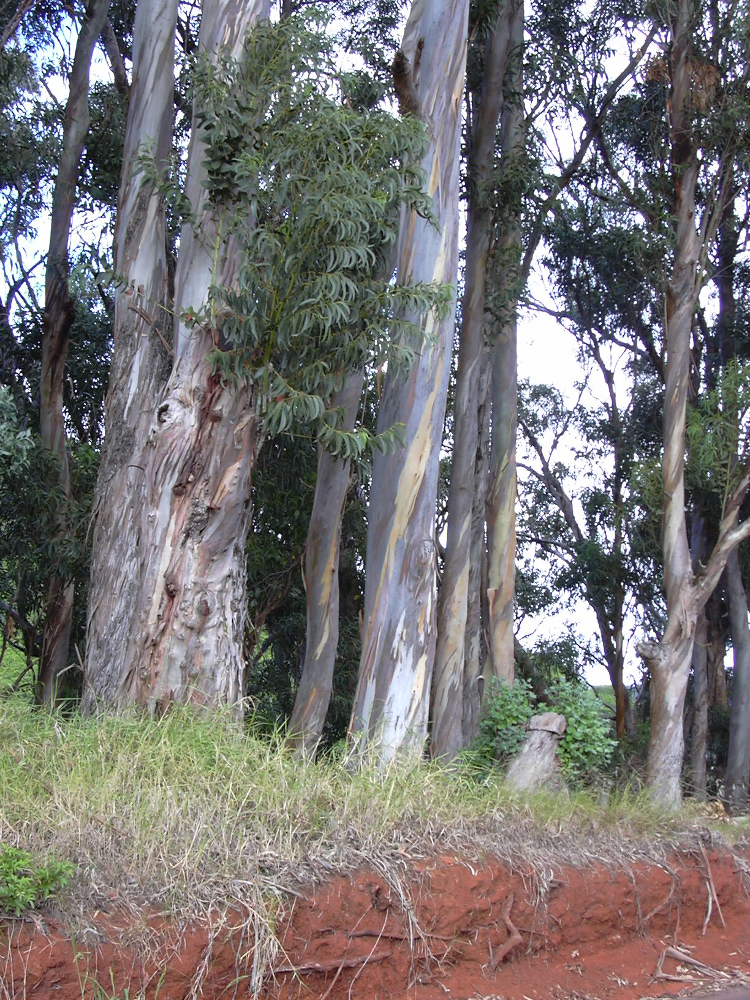
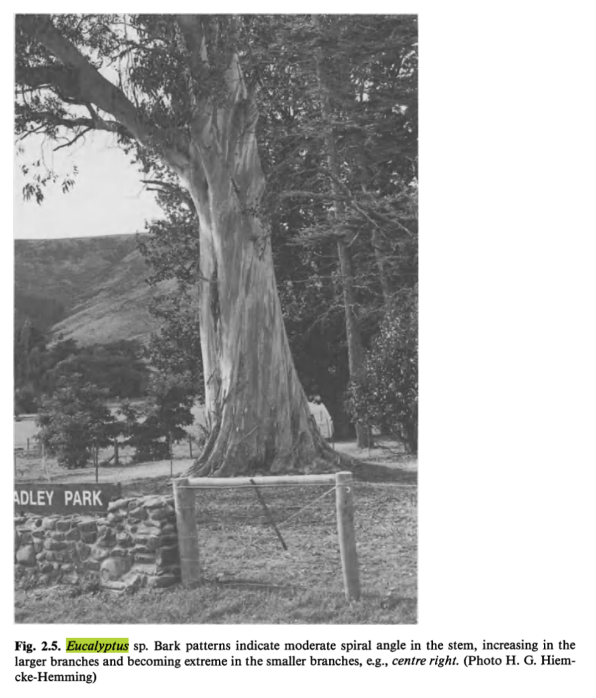
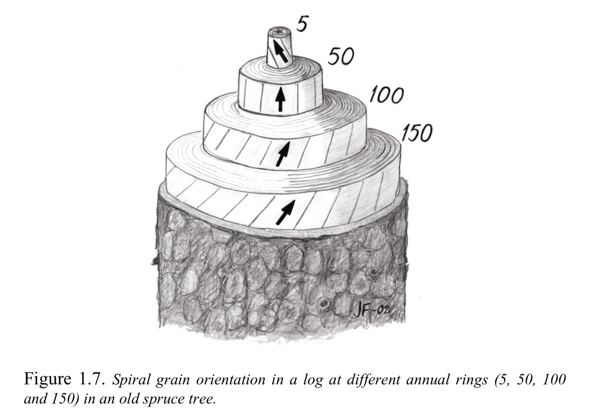

Dendrological Dexterity
Wednesday, December 25, 2019 · 3 min read
It’s Christmastime, shall we talk about trees?
I was reading about Knuth’s Fantasia Apocalypta, and his description of the “style” he wrote it in contains the wonderfully Knuthian line “And of course a musical work on the Apocalypse should also contain calypso.” Naturally I had to look up whether or not this was a linguistic coincidence, and — in an odd turn of events, since these things usually tend to work out — it turns out that apocalypse and calypso are not etymologically related. Apocalypse comes from the Greek root kaluptein, “to cover,” and so the apocalypse is the “uncovering” or “revelation” (the root kel is related to hell). The word calypso is of unknown origin, but from the West Indies (this is distinct from Calypso, the Greek mythological nymph, whose name is indeed related to “covered,” or “concealing”).
I shared this with a good friend of mine and she immediately pointed out that we should check out the word eucalyptus. She was right: eucalyptus means “well-covered,” referring (not ironically to the bark as I originally thought but rather) to the calyx, which forms a lid over flowers when in bud.
That got me thinking about eucalyptuses…
Lately I’ve spent a lot of time around the eucalyptuses in Toyon and Arboretum Groves at Stanford and I’ve noticed that the peeling bark of what I’m 80% sure is the Eucalyptus globulus (Tasmanian Blue Gum) seems to climb up the tree in a whirling, helical pattern. I didn’t have the presence of mind to take a picture at the time but here’s a picture from Wikimedia Commons taken in Maui.
{kind=link}

Really it’s just beautiful to me, the whorl reaching aspirationally towards the sky. I’m reminded of Correggio’s Ganymede Abducted by the Eagle, the way the dog and the tree stump look up together, moving, turning even while frozen in the painting.

This much would be believable, just another quirk of nature. But here’s the truly odd thing: most of the trees seem to grow according to a thumbs-up right-hand rule; if you were to try and screw them into the ground you would turn them righty-tighty. So eucalyptuses have some kind of chirality? I rubbed my eyes, I thought I was dreaming.
But indeed, some hours of study later, I learned that the “spiral grain” is a real thing in the study of wood formation.
In the Real World of economics spiral grain is considered a defect because it reduces the structural quality of wood. But let us set that aside for a moment and marvel at the phenomenon itself. I turn to Dr. John Maddern Harris’ wonderfully comprehensive 1989 text Spiral Grain and Wave Phenomena in Wood Formation (thanks Chandler for finding me a copy!) for details. Harris, citing confusion about the convention in prior work, carefully defines LH (left-handed “sinistral”) and RH (right-handed “dextral”) spirals (I wonder if he was aware of the right-hand-rule convention from E&M, which would simplify matters here). Perhaps more entertainingly Harris introduces the German words as well:
Numerous other expressions have been used to describe spiral direction, reflecting no doubt the notorious difficulty of so doing without waving of arms and twisting of wrists. In the German literature the terms “sonnig” and “wider- sonnig” are frequently encountered. Their meaning is “with the sun” and “against the sun”, and hence (in the Northern Hemisphere!) they relate to LH and RH spiral grain respectively.
Here’s a picture of a eucalyptus from Harris’ book.

Certain species do indeed show predilections for certain handednesses. Furthermore, certain species change handedness over the course of their lives. In Harald Säll 2002 doctoral thesis Spiral Grain in Norway Spruce I learned the remarkable fact that the Norway Spruce begins life as a left-handed spiral grain, but over the decades transitions to a right-handed spiral grain. The drawing below is from his thesis:

We don’t fully understand why trees spiral, much less how they pick a direction. The most fanciful explanation I’ve come across — the one I would like to believe — is that there is some kind of Coriolis effect at work. But I will admit that both handednesses have been observed in both hemispheres, which weakens that theory.
At the moment I’m on a quest to find a (translated, ideally) copy of Meyer’s 1949 article Sprachliche und literarische Bemerkungen zum Problem “Drehwuchs” published in Mitt Schweiz Centralanst Forst Veruschswes (26:331-347) to learn more about the linguistic history of chirality in relation to spiral grains. Until then…
Open question: What’s going on here, why are eucalyptuses right-handed?
Further reading: Noah Rosenberg’s Xtrees site about Stanford trees — I found this while reading about eucalyptuses!